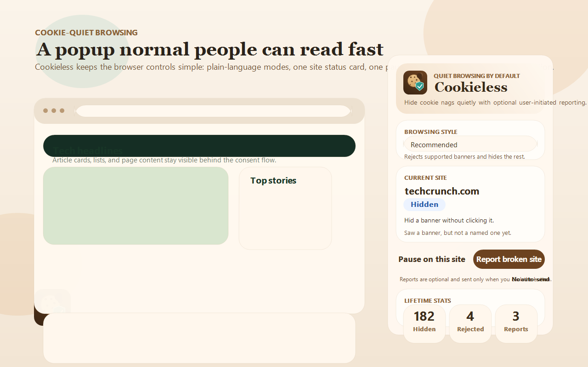
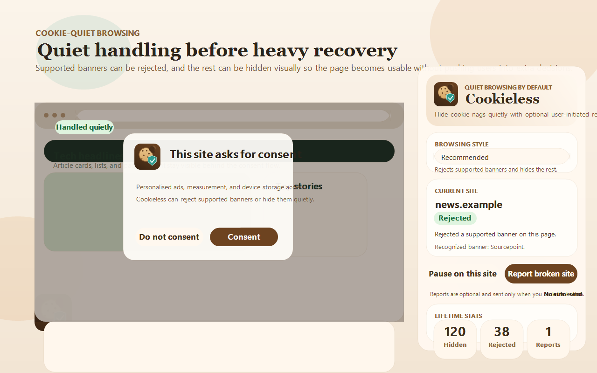
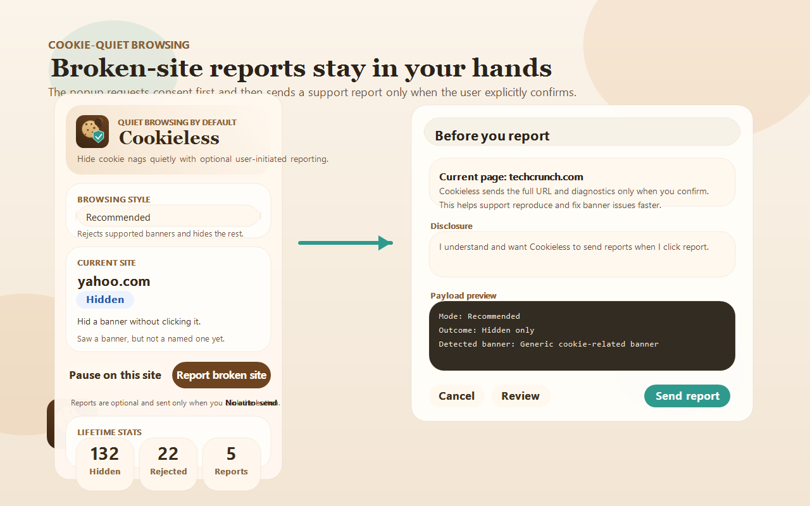
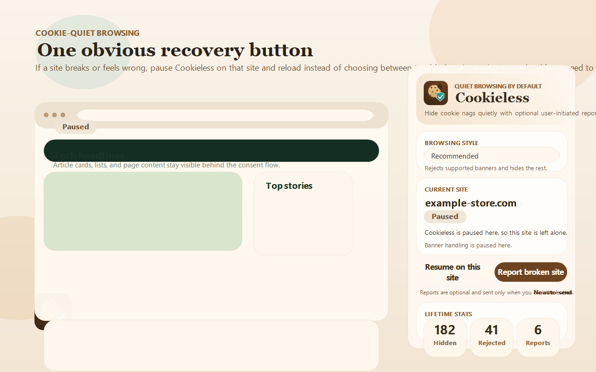
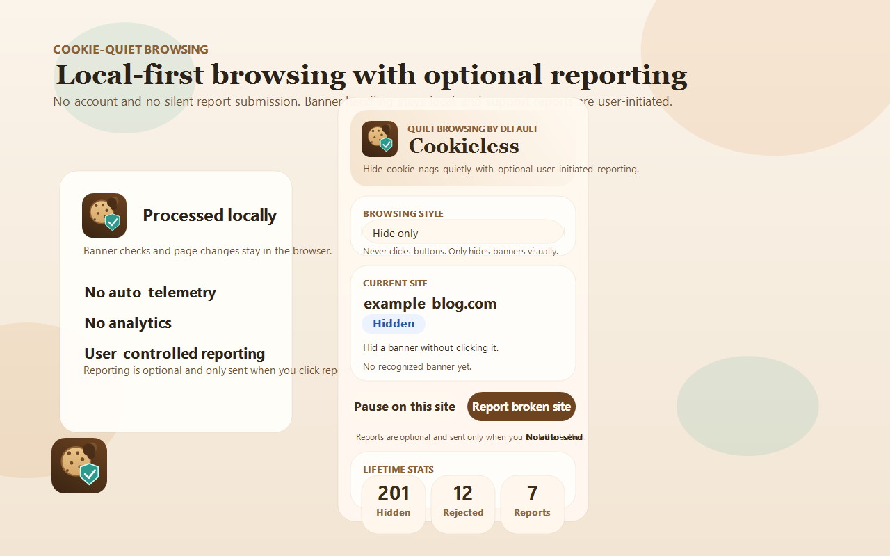

Quiet handling
Reject supported banners and hide the rest.
Cookieless starts with the least disruptive path instead of pretending to accept everything for the user.
Cookieless rejects supported banners, hides the rest visually, and saves broken-site reports only when the user explicitly clicks the report action.
Cookieless keeps the toolbar popup simple so users do not need to choose between troubleshooting actions they do not understand.
Cookieless starts with the least disruptive path instead of pretending to accept everything for the user.
If a site breaks or feels off, the popup gives one obvious recovery control instead of a wall of buttons.
The first report shows a disclosure, and submissions send only the current page URL and diagnostic data needed for support triage.





Homepage URL:
https://stiliyan-dev.github.io/cookieless/
Privacy policy URL:
https://stiliyan-dev.github.io/cookieless/privacy-policy.html